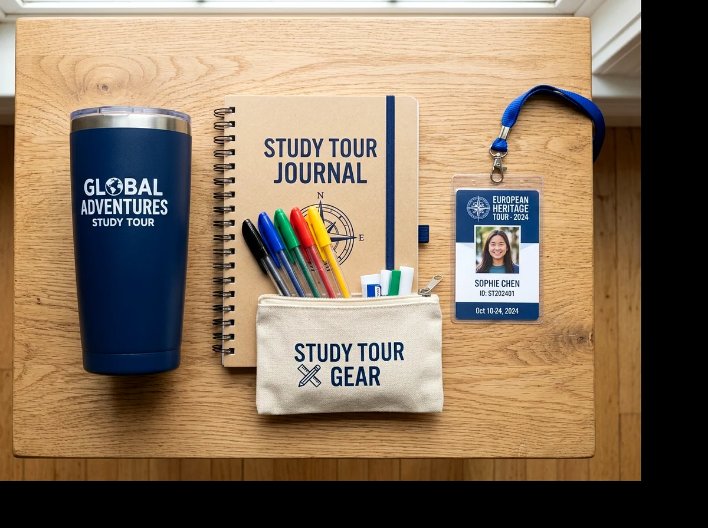

Isi goodie bag MPLS paling bermanfaat ketika berfokus pada panduan orientasi, alat tulis, identitas kelompok, dan perlengkapan yang memang dipakai peserta.
📌 Ringkasan Inti Panduan:
- Susun paket berdasarkan agenda kegiatan nyata, bukan semata kuantitas banyak barang.
- Perlengkapan informasi dan pencatatan materi jauh lebih relevan dibandingkan pernak-pernik dekorasi.
- Gunakan penanda label kelompok fleksibel untuk membantu alur barisan dan mobilitas kelas.
- Pastikan seluruh barang bawaan memenuhi standar keselamatan dan kebijakan resmi pihak sekolah.
1. Apa Saja Barang yang Layak Masuk Goodie Bag MPLS?
Isi goodie bag MPLS sebaiknya dipilih dari daftar kebutuhan orientasi sekolah, lalu diprioritaskan menurut manfaat langsung dan batas anggaran panitia.
Buku panduan kegiatan merupakan pilihan paling esensial jika sekolah membagikan tata tertib, denah ruang belajar, susunan guru pengajar, dan rundown pengenalan dalam bentuk cetak. Notebook saku dan bolpoin ergonomis membantu siswa mencatat poin penting materi motivasi. Kartu nama kelompok atau lanyard identitas mempermudah kakak pendamping OSIS mengatur barisan dan absensi harian.
Namun, tidak semua sekolah membutuhkan isi yang sama. Jika materi panduan telah disebarkan dalam format PDF melalui grup komunikasi resmi sekolah, buku cetak dapat diganti dengan lembar panduan satu lembar (cheatsheet) yang lebih ringkas. Hindari memasukkan benda tajam atau produk yang mudah pecah demi keselamatan siswa.
2. Bagaimana Menyusun Paket MPLS Berdasarkan Prioritas?
Paket perlengkapan MPLS dapat dikelompokkan ke dalam tiga skenario: paket dasar hemat, paket fungsional, dan paket ramah lingkungan jangka panjang:
| Tingkatan Paket | Rekomendasi Isi Paket | Fungsi Utama & Nilai Lebih |
|---|---|---|
| Paket Dasar (Hemat) | Tas spunbond sablon 1 warna, buku rundown panduan, label nama kelompok, 1 bolpoin. | Membawa dokumen orientasi secara rapi dan tertib dengan biaya sangat ekonomis. |
| Paket Fungsional | Tas kain blacu/drill, buku panduan cetak, notebook tulis bergaris, bolpoin, kartu gantungan identitas. | Mendukung aktivitas belajar aktif dan pencatatan materi orientasi secara optimal. |
| Paket Pakai Ulang | Tote bag kanvas tebal beritsleting, notebook hard cover, tumbler minum stainless/BPA-free, stiker almamater. | Dapat terus digunakan sebagai tas sekolah harian atau tas les berbulan-bulan setelah MPLS usai. |
Pilihlah wadah tas yang memiliki daya tahan memadai untuk mengangkut paket tersebut dengan membaca panduan Bahan Goodie Bag MPLS.

3. Apakah Isi Goodie Bag Berbeda untuk SD, SMP, SMA, dan SMK?
Isi goodie bag siswa baru dapat disesuaikan dengan rentang usia, kurikulum sekolah, dan intensitas fisik aktivitas orientasi.
Untuk jenjang Sekolah Dasar (SD), prioritaskan barang berukuran aman dengan visual ceria, seperti buku mewarnai pengenalan adab sekolah, pensil segitiga, dan label nama tahan air berkarakter lucu. Pada jenjang SMP, perlengkapan diarahkan ke buku agenda catatan transisi dan botol minum portabel. Sementara untuk SMA dan SMK, fokuskan pada buku panduan jurusan, peta bengkel praktik kerja, lanyard kartu pelajar, serta tas bertema minimalis yang keren disandang di bahu.
4. Bagaimana Menentukan Barang yang Benar-benar Dibutuhkan?
Cara paling efektif memilih isi goodie bag MPLS adalah menghubungkan setiap barang dengan satu mata kegiatan orientasi nyata yang tercantum dalam jadwal resmi.
Lakukan pemetaan sederhana:
- Sesi Registrasi Awal: Membutuhkan kartu pengenal kelompok dan peniti/tali gantung leher.
- Tur Pengenalan Fasilitas (School Tour): Membutuhkan denah peta sekolah lipat dan air minum kemasan/tumbler.
- Pemaparan Tata Tertib & Kurikulum: Membutuhkan buku panduan saku dan bolpoin.
- Apel Pagi & Yel-yel Kebersamaan: Membutuhkan pita penanda warna kelompok.
Jika suatu barang suvenir tidak memiliki relevansi dengan aktivitas di atas, pertimbangkan untuk mencoretnya dari daftar pengadaan demi efisiensi dana BOS atau anggaran komite sekolah.
5. Bagaimana Menyiapkan dan Memeriksa Paket Sebelum Pembagian?
Pemeriksaan isi goodie bag MPLS memerlukan perakitan sampel utuh (golden sample), daftar periksa per meja assembly, dan verifikasi jumlah per gugus kelas.
Sebelum memasukkan ribuan barang ke dalam tas, lakukan uji coba pada 1 unit tas. Masukkan buku panduan, bolpoin, dan tumbler. Periksa apakah bukaan tas cukup leluasa, buku tidak terlipat sudutnya, dan tali pegangan tidak meregang berlebihan. Jika sampel lolos uji, barulah tim panitia OSIS menyusun meja perakitan bertahap (assembly line) agar setiap tas terisi lengkap tanpa ada barang yang tertinggal.
6. Bagaimana Mengelola Anggaran Isi Paket Tanpa Mengurangi Fungsi?
Pengelolaan anggaran paket MPLS dilakukan dengan memisahkan biaya fisik tas kemasan, perlengkapan cetak, alat tulis, dan ongkos logistik.
Cek ketersediaan stok internal koperasi atau sisa pengadaan tahun lalu. Jika sekolah masih memiliki stok bolpoin resmi berlogo almamater, manfaatkan stok tersebut. Untuk tas pelindung, mintalah penawaran grosir bundling langsung ke produsen tangan pertama di Vendor Goodie Bag MPLS untuk memangkas margin distributor perantara.
7. Pertanyaan Umum Seputar Isi Goodie Bag MPLS (FAQ)
8. Kesimpulan Praktis Pemilihan Isi Paket
Isi goodie bag MPLS yang berkualitas dinilai dari sejauh mana perlengkapan tersebut meringankan hari pertama siswa beradaptasi di lingkungan sekolah baru. Pilihlah barang yang fungsional, kemas secara rapi per kelas, dan padukan dengan tas berdaya tahan kuat dari panduan Goodie Bag MPLS Sekolah.

Ditulis oleh Devaliana Tensa
Praktisi konveksi tas, garment merchandiser, dan founder workshop Goodie Bag Malang dengan pengalaman lebih dari 8 tahun dalam produksi tas seminar, goodie bag pameran, dan suvenir custom korporat di Indonesia.
Artikel Terkait Seputar Goodie Bag & MPLS Sekolah